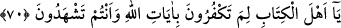

olduğu inancı bıraktıramaz. Bu, dînin en yüce mertebesi olup bu mertebeye
peygamberler, velîler ve bazı mü’minler ulaşabilirler.
Hz. Ali (k.v.) şöyle buyurur: “Gözümün önündeki perde kalksa, îmanım yine de
artmaz.” Duyu organlarıyla algılanan şeylerde hiçbir şüphe hâsıl olmaz. Onların
hükmünde olan da aynıdır.
Bazıları da vardır ki, ezelî inâyetin yardımı olmadıktan sonra, hevâ ve heves
rüzgarlarının dilediği yöne savurduğu, metânetsiz, zayıf kişilerdir. Hz. Peygamber (s.a.)
şöyle buyurmuştur: “İnsanlar altın ve gümüş gibidirler.”[52] Yani insanlar ilim, amel
ve ahlâk madenleridir. Fakat altın ve gümüş nasıl en yüksek ayardan en alçak ayara
kadar farklılık arzediyorsa bu madenler de farklı kırattadırlar.
Şerhu’l-Misbâh’ın yazarı şöyle diyor: “Bu hadiste şöyle bir işaret vardır: Nasıl ki
mâdenî cevherler çeşitli ölçümlerle büyük meşakkatler çekilerek çıkarılıyorsa, insan
tabiatının madenindeki ahlâk güzelliği ile ilgili cevherler nefis riyâzâtı ile çıkartılmalı,
elde edilmelidir.” Şu şiiri inşâd eden ne kadar güzel söylemiş:
Ne ise kapasiten, o kadar yücelebilirsin
Uyumaz, yükselmek isteyenler, geceleyin
Hem izzet istiyorsun hem gece uyuyorsun
Denize dalması gerekir inci isteyenin.
O halde mutlaka çok çalışmak ve Allah’ın velî kullarından, abdâllardan yardım
istemek gerekir. Belki böylece Allah Teâlâ, bu yola girmeni kolaylaştırıp bu engin
denizin tehlikelerinden korur.
Bir yük ki yer ve gök onu taşıyamamıştı.
Bu cisim ve cânın yardımıyla bu yükü taşımak zordur.
Himmetini kavî tut, aşk yolcusu velîlerden meded talep et!
Zira bu yük, ancak onların himmetiyle taşınabilir.
70. Ey ehl-i kitap! (Gerçeği) görüp bildiğiniz halde niçin Allah’ın âyetlerini inkâr
edersiniz?
“Ey kitap ehli” Bunların, Allah’ın âyetleri olduğunu gördüğünüz halde Tevrat ve
İncil’in Hz. Muhammed’in hak bir peygamber olduğuna delâlet ettiği Allah’ın âyetlerini
niçin inkâr ediyorsunuz?